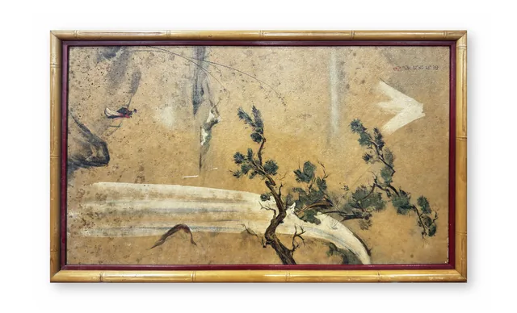

Paintings & Prints
Antique East Asian Pine and Birds Painting, Signed, Framed
· probably early to mid 20th century or earlier
Price Upon Request

About the Item
A wide ink-and-colour composition on a deeply toned ochre ground: a twisting pine with clusters of dark green needles rises from a rocky spur at lower right, while a pale drifted bank sweeps across the lower left. A small russet and dark bird perches on rock at upper left and a pale winged form hovers at upper right, with fine trailing willow strokes across the empty upper field. The palette is limited to earth ochre, sepia, deep green and a single note of vermilion, and the surface is heavily aged and mottled. Set in a gilt faux-bamboo frame with a dark red inner slip. Medium: ink and colour on paper, laid down. Signed upper right. Condition: Heavy overall discolouration and foxing of the ground, scattered dark stains and small losses, surface abrasion; frame gilding rubbed at the corners.
Details
- Creation Year:
- probably early to mid 20th century or earlier
- Dimensions:
- Height: 15.5 in (39.37 cm)
Width: 25.5 in (64.77 cm)
outside of frame - Medium:
- ink and colour on paper, laid down
- Period:
- 20Th
- Condition:
- Offered in the condition shown in the photographs.
- Reference Number:
- VO-198
- Documentation:
- no certificate present